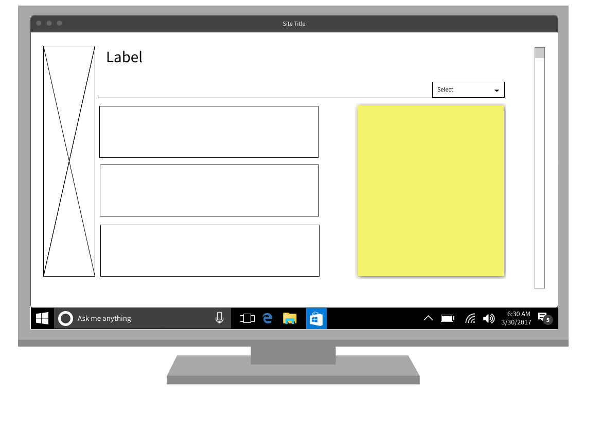
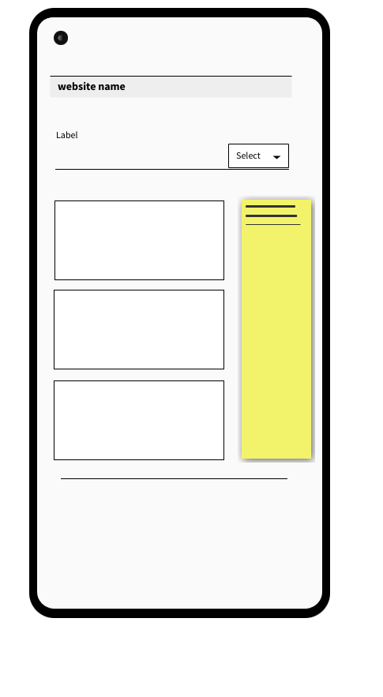

content strategy
The contents of this website are very simple. As simple a workout library for different skill levels.
Beginner, intermediate, and advanced are the tree levels of workouts available throughout the website. each level
of difficulty has its own subsection for a leg workout, upper body workout, abs, and cardio. The workouts are then
illustrated with .gif images and explained properly. the select scroll down at the top right
allows the user to choose between leg, upper body, abs and cardio. the tree big boxes in the middle of the page will
hold a link for the selected workouts' level of difficulty. the user will select one box according to his desired
difficulty level. upon clicking the box a series of gif images with illustrate the workout. the yellow box on the right
will contain information on how to use the website and a few words of motivation. the picture on the left will be a
very motivating picture of a fit man or woman working out and breaking sweats.